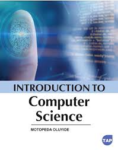
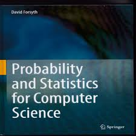
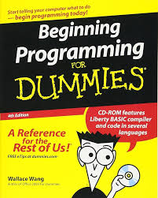

Our leading-edge programs offer practical connections at every step, balancing classroom theory and hands-on learning to produce confident, knowledeable and skilled professionals
Browse NWP programsComputer professionals must have good reasoning and logical problem solving abilities, be observant, alert to detail and tenacious in pursuing problems to completion. The Computing Science programs at Northwestern Polytechnic offer students an opportunity to integrate extensive software development skills with hardware skills. Emphasis in various programs include: computer graphics and image processing, digital hardware, data communications and networking. Hardware facilities include dedicated circuit design and robotics lab, data communications, and networking lab, as well as six general access computer labs. As a graduate of the two-year diploma at Northwestern Polytechnic, students are qualified for positions in software development including hardware and networking components; game programming; database applications; PC support; networking specialist; financial systems development; etc. Typically, graduates work as programmer/analysts and network administrators.
Visit NWP websiteThe Computing Science programs at Northwestern Polytechnic offer students an opportunity to integrate extensive software development skills with hardware skills. Emphasis in various programs include: computer graphics and image processing, digital hardware, data communications and networking. Hardware facilities include dedicated circuit design and robotics lab, data communications, and networking lab, as well as six general access computer labs. Students have a choice of a two-semester certificate, a four-semester diploma program and degree completion opportunities. As a graduate of the two-year diploma at Northwestern Polytechnic, students are qualified for positions in software development including hardware and networking components; game programming; database applications; PC support; networking specialist; financial systems development; etc. Typically, graduates work as programmer/analysts and network administrators.
Visit NWP websiteThe Bachelor of Computing Science program gives learners a solid foundation in the technical, communication and hands-on skills needed to excel as a computing science professional. Explore a myriad of different areas such as computer games, networking and communications, big data, cloud computing, database development, artificial intelligence, machine learning, robotics, computer graphics, and mobile applications. Virtually every industry in the world makes use of computer technology and computing science graduates are essential in developing the applications that drive those industries forward.
Visit NWP website
Introduction to Computing Science
Credits: 3
Total Hours: 60
Elementary Data Structures
Credits: 3
Total Hours: 60

Introduction to Applied Statistics I
Credits: 3
Total Hours: 60

Practical Programming Methodology
Credits: 3
Total Hours: 60